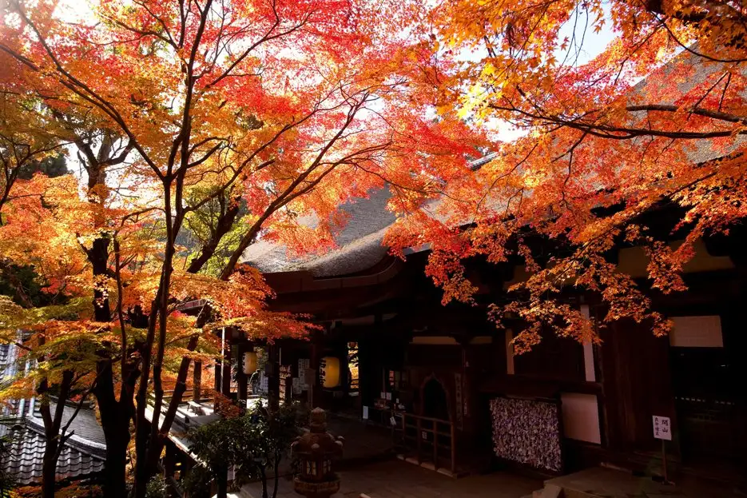

Japan / Shiga / Otsu
Otsu · Shiga
Otsu
Highlighted on the Shiga map.

Otsu City Hall
Sights · Things to do · Places to eat · Places to stay · Day-to-day services
Nearby in Shiga: ← Omihachiman · Ritto →
Other towns: Aisho · Higashiomi · Hikone · Hinocho · Koka · Konanshi · Kora · Kusatsu · Maibara · Moriyama · Nagahama · Omihachiman · Ritto · Ryuo · Taga · Takashima · Toyosato · Yasu
All towns in Shiga · Back to all prefectures